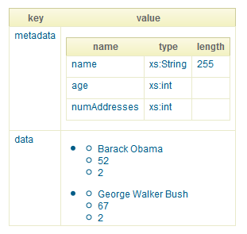
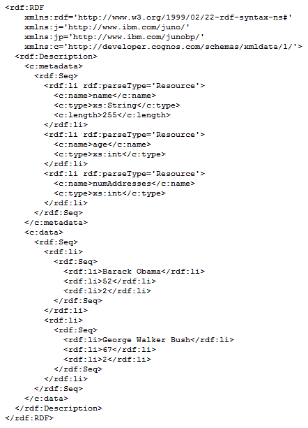

-
Class Summary Class Description Column Represents a meta-data column in a Cognos dataset.DataSet Represents a Cognos dataset.DataSet.Row Represents a row of data.
Package org.apache.juneau.dto.cognos Description
Cognos Data Transfer Objects
Table of Contents
1 - Cognos serialization support
The DataSet class is a DTO used to convert POJO models directly to Cognos-XML.
Because of the nature of the Cognos XML syntax, only 2-dimensional POJO data structures can be serialized to Cognos-XML.
For example...
Collection<Bean>Collection<Map>MyBean[]HashMap[]
Example:
The following example shows how to generate Cognos-XML from a POJO.
The example uses the AddressBook sample POJO.
It should be noted that since the AddressBook class is a subclass of LinkedList, it fulfills
the requirement of being a tabular data structure.
When run, this code produces the following XML...
Other data formats
The following shows examples of what this data structure looks like when serialized to other formats:
HTML
JSON

RDF/XML
2 - Cognos parsing support
The DataSet class can be reconstructed from Cognos/XML using one of the standard XML parsers.
Example: